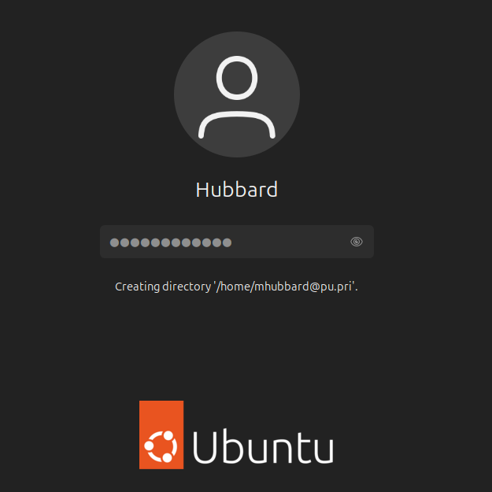
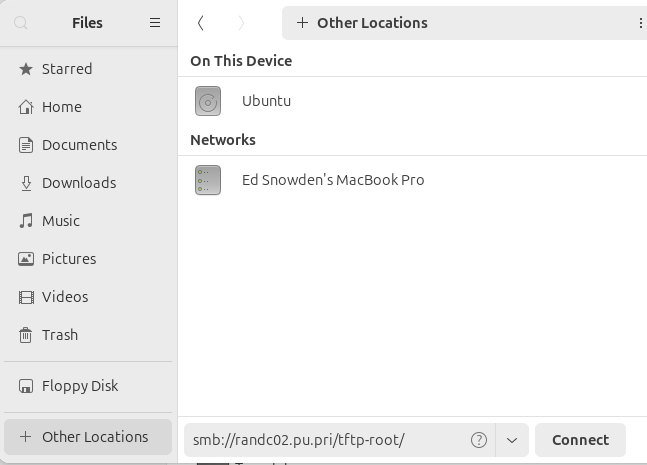
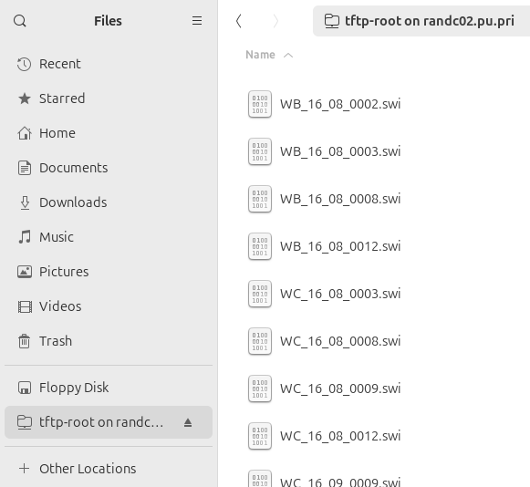
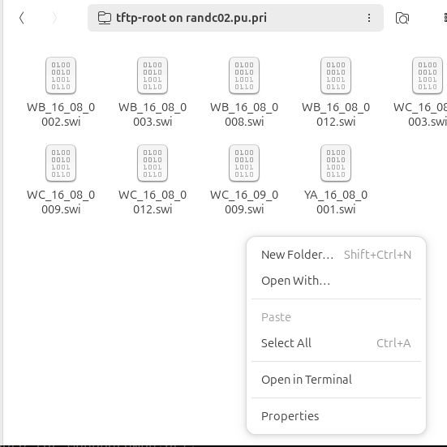

Join Ubuntu 24.04 desktop to AD
 KEY TAKEAWAYS
KEY TAKEAWAYS
- It's surprising easy to join Ubuntu 24.04 to Active Directory
- All of the packages needed are in the Ubuntu package manager
- Ubuntu has several tools for managing the AD connection
Many companies will require that all laptops or Virtual Machines be connected to Active Directory. That is no problem with Ubuntu 24.04 as Canonical provides the packages needed.
Install the packages needed to join AD
Whether it's a laptop or VM it should be fully updated before starting the installation of the Active Directory packages. Use the following command to update and install the packages:
| sudo apt update && sudo apt upgrade
sudo apt install sssd-ad sssd-tools realmd adcli
|
Review the installed packages
This is optional but I wanted to show you how to use apt to display versions
| mhubbard@z420VM-2404:~$ apt policy sssd-ad sssd-tools realmd adcli
sssd-ad:
Installed: 2.9.4-1.1ubuntu6
Candidate: 2.9.4-1.1ubuntu6
Version table:
*** 2.9.4-1.1ubuntu6 500
500 http://us.archive.ubuntu.com/ubuntu noble/main amd64 Packages
100 /var/lib/dpkg/status
sssd-tools:
Installed: 2.9.4-1.1ubuntu6
Candidate: 2.9.4-1.1ubuntu6
Version table:
*** 2.9.4-1.1ubuntu6 500
500 http://us.archive.ubuntu.com/ubuntu noble/main amd64 Packages
100 /var/lib/dpkg/status
realmd:
Installed: 0.17.1-3build2
Candidate: 0.17.1-3build2
Version table:
*** 0.17.1-3build2 500
500 http://us.archive.ubuntu.com/ubuntu noble/main amd64 Packages
100 /var/lib/dpkg/status
adcli:
Installed: 0.9.2-1ubuntu2
Candidate: 0.9.2-1ubuntu2
Version table:
*** 0.9.2-1ubuntu2 500
500 http://us.archive.ubuntu.com/ubuntu noble/main amd64 Packages
100 /var/lib/dpkg/status
|
Prerequisites before joining AD
- A working Active Directory domain is available
- You have access to the credentials to join a machine to that domain
- The DC is acting as an authoritative DNS server for the domain.
- The primary DNS resolver on the laptop points to a DC (check with resolvectl status).
- System time is correct and in sync with the DC, maintained via a service like chrony or ntp.
- The domain used in this example is pu.pri.
- The laptop's hostname is z420VM-2404.
Check the current host configuration
| mhubbard@z420VM-2404:~$ hostnamectl
Static hostname: z420VM-2404.pu.pri
Icon name: computer-vm
Chassis: vm 🖴
Machine ID: c7fecbdab8ed4fdba09c3833e51fc616
Boot ID: e71c80c79fb54e2b9e88ea1c77e005a9
Virtualization: vmware
Operating System: Ubuntu 24.04 LTS
Kernel: Linux 6.8.0-31-generic
Architecture: x86-64
Hardware Vendor: VMware, Inc.
Hardware Model: VMware Virtual Platform
Firmware Version: 6.00
Firmware Date: Thu 2020-11-12
Firmware Age: 3y 6month 2w 3d
|
Notice that the fully qualified DNS domain pu.pri is appended to the hostname. That is the domain we will join. For an Ubuntu 24.04 machine to join AD it must have the hostname setup correctly.
mhubbard@z420VM-2404:~$ sudo hostnamectl set-hostname z420VM-2404.pu.pri
mhubbard@z420VM-2404:~$ hostname
z420VM-2404.pu.pri
Verify that a DC (192.168.10.222) is the DNS resolver
| mhubbard@z420VM-2404:~$ resolvectl status
Global
Protocols: -LLMNR -mDNS -DNSOverTLS DNSSEC=no/unsupported
resolv.conf mode: stub
Link 2 (ens33)
Current Scopes: DNS
Protocols: +DefaultRoute -LLMNR -mDNS -DNSOverTLS DNSSEC=no/unsupported
Current DNS Server: 192.168.10.222
DNS Servers: 192.168.10.222
DNS Domain: pu.pri
|
Note
To clear the DNS cache use resolvectl flush-caches
Verify that the host can be found in DNS
The host command with a domain name as the parameter will return DNS information about the domain name.
| host pu.pri
pu.pri has address 192.168.10.222
pu.pri has IPv6 address fd24:42b2:12ce:0:a9da:b612:7d4c:7683
|
Now we know at there is a DC is at 192.168.10.222.
The host command with a hostname will print out the hostname and ip address. Then we use the host command with the ip address to look up the host in DNS.
| mhubbard@z420VM-2404:~$ host z420VM-2404
z420VM-2404.pu.pri has address 192.168.10.105
mhubbard@z420VM-2404:~$ host 192.168.10.105
105.10.168.192.in-addr.arpa domain name pointer z420VM-2404.pu.pri.
|
The host command may return 127.0.1.1 as the ip address. This will still work in the second step. The host command returned the pu.pri domain so the host can be found in the DNS zone. There are two reasons I did it this way instead of just looking at the terminal prompt and pinging that name with the domain added on:
- You just learned about the host command. You can use
man host to learn more.
- DNS is critical to AD and this method makes the DNS properties more obvious.
Use dig to verify that DNS works
If the host command returns 127.0.1.1 as the ip address then use the ip address command to find the network ip address. In this example the @ is used to pick a specific DNS server. If you don't use it the host will use the loopback IP address.
| mhubbard@z420VM-2404:~$ dig @192.168.10.222 -x 192.168.10.105
; <<>> DiG 9.18.28-0ubuntu0.24.04.1-Ubuntu <<>> @192.168.10.222 -x 192.168.10.105
; (1 server found)
;; global options: +cmd
;; Got answer:
;; ->>HEADER<<- opcode: QUERY, status: NOERROR, id: 24053
;; flags: qr aa rd ra; QUERY: 1, ANSWER: 1, AUTHORITY: 0, ADDITIONAL: 1
;; OPT PSEUDOSECTION:
; EDNS: version: 0, flags:; udp: 4000
;; QUESTION SECTION:
;105.10.168.192.in-addr.arpa. IN PTR
;; ANSWER SECTION:
105.10.168.192.in-addr.arpa. 3600 IN PTR z420VM-2404.pu.pri.
;; Query time: 0 msec
;; SERVER: 192.168.10.222#53(192.168.10.222) (UDP)
;; WHEN: Thu Aug 15 17:40:12 PDT 2024
;; MSG SIZE rcvd: 88
|
You can also use grep to just pull out the hostname section:
| dig @192.168.10.222 -x 192.168.10.105 | grep -B 2 z420
;; ANSWER SECTION:
105.10.168.192.in-addr.arpa. 3600 IN PTR z420VM-2404.pu.pri.
|
Use dig with the hostname
| mhubbard@z420VM-2404:~$ dig @192.168.10.222 z420VM-2404.pu.pri
; <<>> DiG 9.18.28-0ubuntu0.24.04.1-Ubuntu <<>> @192.168.10.222 z420VM-2404.pu.pri
; (1 server found)
;; global options: +cmd
;; Got answer:
;; ->>HEADER<<- opcode: QUERY, status: NOERROR, id: 3444
;; flags: qr aa rd ra; QUERY: 1, ANSWER: 1, AUTHORITY: 0, ADDITIONAL: 1
;; OPT PSEUDOSECTION:
; EDNS: version: 0, flags:; udp: 4000
;; QUESTION SECTION:
;z420VM-2404.pu.pri. IN A
;; ANSWER SECTION:
z420VM-2404.pu.pri. 3600 IN A 192.168.10.105
;; Query time: 0 msec
;; SERVER: 192.168.10.222#53(192.168.10.222) (UDP)
;; WHEN: Thu Aug 15 17:45:48 PDT 2024
;; MSG SIZE rcvd: 63
|
Troubleshooting If using DHCP
It's critical that the host got a dhcp assigned address and that DHCP registered a DNS A record. If the above fails you have to fix it before proceeding.
I setup Windows server DHCP to always register a DNS A record and created an AD account for it to use.
Release and renew the lease
Ubuntu 24.04 has transitioned a lot of networking services to networkd from network manager. Because of this dhclient isn't installed. Run the following commands to install it and release/renew the lease:
| sudo apt install isc-dhcp-client
sudo dhclient -r ens33
sudo dhclient -v ens33
|
The -r releases and the dhclient with no options renews. The -v means verbose and I like to use it to get more detail.
Troubleshooting If using static IP
There is no automatic way for the DNS server to register your laptop if you are using a static IP address. You will have to manually create the DNS entry. I highly recommend that you create the forward and reverse DNS entry.
Display the NTP server
cat /etc/systemd/timesyncd.conf
If you see #NTP then you will need to edit the /etc/systemd/timesyncd.conf file.
sudo gnome-text-editor /etc/systemd/timesyncd.conf
Set the DC as the NTP server
| [Time]
NTP=192.168.10.222
FallbackNTP=time-b.nist.gov
|
Restart the daemons
Verify that the time on the DC matches the time on the Ubuntu box
On the DC
| C:\Windows\system32>time
The current time is: 14:57:02.37
|
On the Ubuntu box
| mhubbard@z420VM-2404:~$ timedatectl status
Local time: Thu 2024-05-30 14:58:08 PDT
Universal time: Thu 2024-05-30 21:58:08 UTC
RTC time: Thu 2024-05-30 21:58:08
Time zone: America/Los_Angeles (PDT, -0700)
System clock synchronized: yes
NTP service: active
RTC in local TZ: no
|
Verify that the host can find AD
| mhubbard@z420VM-2404:~$ realm -v discover pu.pri
* Resolving: _ldap._tcp.pu.pri
* Performing LDAP DSE lookup on: 192.168.10.222
* Successfully discovered: pu.pri
pu.pri
type: kerberos
realm-name: PU.PRI
domain-name: pu.pri
configured: no
server-software: active-directory
client-software: sssd
required-package: sssd-tools
required-package: sssd
required-package: libnss-sss
required-package: libpam-sss
required-package: adcli
required-package: samba-common-bin
|
Create the Kerberos file
| mhubbard@z420VM-2404:~$ sudo touch /etc/krb5.conf
mhubbard@z420VM-2404:~$ sudo gnome-text-editor /etc/krb5.conf
[libdefaults]
default_realm = PU.PRI
rdns = false
mhubbard@z420VM-2404:~$ sudo cat /etc/krb5.conf
[libdefaults]
default_realm = PU.PRI
rdns = false
|
Verify that the DC is discoverable
| mhubbard@z420VM-2404:~$ realm discover randc02.pu.pri
pu.pri
type: kerberos
realm-name: PU.PRI
domain-name: pu.pri
configured: no
server-software: active-directory
client-software: sssd
required-package: sssd-tools
required-package: sssd
required-package: libnss-sss
required-package: libpam-sss
required-package: adcli
required-package: samba-common-bin
|
Join the Domain
| mhubbard@z420VM-2404:~$ realm join randc02.pu.pri
Password for Administrator:
mhubbard@z420VM-2404:~$ realm discover randc02.pu.pri
pu.pri
type: kerberos
realm-name: PU.PRI
domain-name: pu.pri
configured: kerberos-member
server-software: active-directory
client-software: sssd
required-package: sssd-tools
required-package: sssd
required-package: libnss-sss
required-package: libpam-sss
required-package: adcli
required-package: samba-common-bin
login-formats: %U@pu.pri
login-policy: allow-realm-logins
|
Display the sssd.conf file
| mhubbard@z420VM-2404:~$ sudo ls -l /etc/sssd
total 8
drwxr-xr-x 2 root root 4096 Apr 16 02:55 conf.d
-rw------- 1 root root 414 May 30 15:57 sssd.conf
mhubbard@z420VM-2404:~$ sudo cat /etc/sssd/sssd.conf
[sssd]
domains = pu.pri
config_file_version = 2
services = nss, pam
[domain/pu.pri]
default_shell = /bin/bash
ad_server = randc02.pu.pri
krb5_store_password_if_offline = True
cache_credentials = True
krb5_realm = PU.PRI
realmd_tags = manages-system joined-with-adcli
id_provider = ad
fallback_homedir = /home/%u@%d
ad_domain = pu.pri
use_fully_qualified_names = True
ldap_id_mapping = True
access_provider = ad
|
Set the correct file permissions
Something very important to remember is that this file must have permissions 0600 and ownership root:root, or else SSSD won’t start!
Some key things from this config file:
- cache_credentials: This allows logins when the AD server is unreachable
- fallback_homedir: The home directory. By default,
/home/<user>@<domain>. For example, the AD user john will have a home directory of /home/john@pu.pri.
- use_fully_qualified_names: Users will be of the form user@domain, not just user. This should only be changed if you are certain no other domains will ever join the AD forest, via one of the several possible trust relationships.
Display the PAM configuration file
In Linux Pluggable Authentication Modules (PAM) are used to extend authentication to new services.
| mhubbard@z420VM-2404:~$ sudo cat /etc/pam.d/common-session
#
# /etc/pam.d/common-session - session-related modules common to all services
#
# This file is included from other service-specific PAM config files,
# and should contain a list of modules that define tasks to be performed
# at the start and end of interactive sessions.
#
# As of pam 1.0.1-6, this file is managed by pam-auth-update by default.
# To take advantage of this, it is recommended that you configure any
# local modules either before or after the default block, and use
# pam-auth-update to manage selection of other modules. See
# pam-auth-update(8) for details.
# here are the per-package modules (the "Primary" block)
session [default=1] pam_permit.so
# here's the fallback if no module succeeds
session requisite pam_deny.so
# prime the stack with a positive return value if there isn't one already;
# this avoids us returning an error just because nothing sets a success code
# since the modules above will each just jump around
session required pam_permit.so
# The pam_umask module will set the umask according to the system default in
# /etc/login.defs and user settings, solving the problem of different
# umask settings with different shells, display managers, remote sessions etc.
# See "man pam_umask".
session optional pam_umask.so
# and here are more per-package modules (the "Additional" block)
session required pam_unix.so
session optional pam_sss.so
session optional pam_systemd.so
# end of pam-auth-update config
mhubbard@z420VM-2404:~$ sudo pam-auth-update --enable mkhomedir
mhubbard@z420VM-2404:~$ sudo cat /etc/pam.d/common-session
#
# /etc/pam.d/common-session - session-related modules common to all services
#
# This file is included from other service-specific PAM config files,
# and should contain a list of modules that define tasks to be performed
# at the start and end of interactive sessions.
#
# As of pam 1.0.1-6, this file is managed by pam-auth-update by default.
# To take advantage of this, it is recommended that you configure any
# local modules either before or after the default block, and use
# pam-auth-update to manage selection of other modules. See
# pam-auth-update(8) for details.
# here are the per-package modules (the "Primary" block)
session [default=1] pam_permit.so
# here's the fallback if no module succeeds
session requisite pam_deny.so
# prime the stack with a positive return value if there isn't one already;
# this avoids us returning an error just because nothing sets a success code
# since the modules above will each just jump around
session required pam_permit.so
# The pam_umask module will set the umask according to the system default in
# /etc/login.defs and user settings, solving the problem of different
# umask settings with different shells, display managers, remote sessions etc.
# See "man pam_umask".
session optional pam_umask.so
# and here are more per-package modules (the "Additional" block)
session required pam_unix.so
session optional pam_sss.so
session optional pam_systemd.so
session optional pam_mkhomedir.so
# end of pam-auth-update config
|
Display the realm
| mhubbard@z420VM-2404:~$ realm list
pu.pri
type: kerberos
realm-name: PU.PRI
domain-name: pu.pri
configured: kerberos-member
server-software: active-directory
client-software: sssd
required-package: sssd-tools
required-package: sssd
required-package: libnss-sss
required-package: libpam-sss
required-package: adcli
required-package: samba-common-bin
login-formats: %U@pu.pri
login-policy: allow-realm-logins
|
Display AD Status
| mhubbard@z420VM-2404:~$ sudo sssctl domain-status pu.pri
Online status: Online
Active servers:
AD Global Catalog: not connected
AD Domain Controller: randc02.pu.pri
Discovered AD Global Catalog servers:
- randc02.pu.pri
Discovered AD Domain Controller servers:
- randc02.pu.pri
|
Log into the domain
The format at the login screen is username@domain. In this example, my username is mhubbard and the domain is pu.pri so the login will be mhubbard@pu.pri. Remember that the password is the Active Directory password.

You will see a message that the /home/username@domain directory is being created. If we open a terminal and run:
| ls -l /home/
total 12
drwxr-x--- 17 mhubbard mhubbard 4096 Aug 15 21:57 mhubbard/
drwxr-x--- 16 mhubbard@pu.pri domain users@pu.pri 4096 Aug 16 13:28 'mhubbard@pu.pri'/
|
you can see the mhubbard@pu.pri home directory, the owner is mhubbard@pu.priand group membership is domain users@pu.pri.
Add the AD user to the sudoers group
If your company policy allows it you should add your new AD account to the sudoers group. Log in with your local account (Assuming it has sudo rights) and run the following command:
| sudo usermod -aG sudo mhubbard@pu.pri
|
Connect to a windows share
Ubuntu uses the SAMBA protocols to join and work with a Windows domain. Once the laptop is joined you can easily access Windows share resources. Open the Files application and click on + Other Locations at the bottom of the left window. You will see a connect to server message and a Connect button.
Since we are using the SAMBA protocol, the address will start with smb:// and then the server name (IP or FQDN) and a share name. In the image below I an connecting to the DC (randc02.pru.pri) and a share named tftp-root.

Click on Connect and the share will be mounted and files will open a new window with the share displayed:

If you want to work with the files in the terminal the easiest way is to right click in the share window and select Open in Terminal:

The path is gnarly!
| /run/user/1242401104/gvfs/smb-share:server=randc02.pu.pri,share=tftp-root$ ls -l
total 225895
-rwx------ 1 mhubbard@pu.pri domain users@pu.pri 16979365 Aug 17 23:21 WB_16_08_0002.swi
-rwx------ 1 mhubbard@pu.pri domain users@pu.pri 16977864 Aug 17 23:21 WB_16_08_0003.swi
|
Create a mount point
If you work mostly from the terminal it's probably better to create a mount point and mount the share:
| sudo mkdir /mnt/tftp-root
sudo mount -t cifs -o username=mhubbard@pu.pri,password=Sup3rS3cr3t //192.168.10.222/tftp-root /mnt/tftp-root/
cd /mnt/tftp-root/
mhubbard@pu.pri@z420-2404:/mnt/tftp-root$ l -l
total 225912
-rwxr-xr-x 1 root root 16979365 Aug 17 23:21 WB_16_08_0002.swi*
-rwxr-xr-x 1 root root 16977864 Aug 17 23:21 WB_16_08_0003.swi*
|
Then when you are finished, unmount the shared filesystem:
sudo umount -l /mnt/tftp-root
The -l argument means lazy. It unmounts when all processes and dependencies are released.
Display a specific user
| sudo sssctl user-checks mhubbard@pu.pri
user: mhubbard@pu.pri
action: acct
service: system-auth
SSSD nss user lookup result:
- user name: mhubbard@pu.pri
- user id: 1242401104
- group id: 1242400513
- gecos: Hubbard, Michael
- home directory: /home/mhubbard@pu.pri
- shell: /bin/bash
SSSD InfoPipe user lookup result:
- name: mhubbard@pu.pri
- uidNumber: 1242401104
- gidNumber: 1242400513
- gecos: Hubbard, Michael
- homeDirectory: not set
- loginShell: not set
testing pam_acct_mgmt
pam_acct_mgmt: Permission denied
PAM Environment:
- no env -
|
Display the "Domain Users" group
| mhubbard@z420VM-2404:~$ getent group "domain users"@pu.pri
domain users@pu.pri:*:1242400513:z420VM-2404@pu.pri
|
Display a user's groups
| groups mhubbard@pu.pri
mhubbard@pu.pri : domain users@pu.pri denied rodc password replication group@pu.pri cisco admins@pu.pri sonicwall-nps@pu.pri domain admins@pu.pri
|
| mhubbard@z420VM-2404:~$ getent passwd mhubbard@pu.pri
mhubbard@pu.pri:*:1242401104:1242400513:Hubbard, Michael:/home/mhubbard@pu.pri:/bin/bash
|
The values:
- User ID Number (uidNumber):
1242401603
- group ID Number (gidNumber):
1242400513
- User:
Hubbard, Michael
- Home Directory:
/home/mhubbard@pu.pri
- Shell:
/bin/bash
References